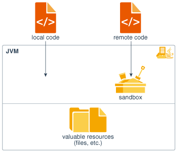
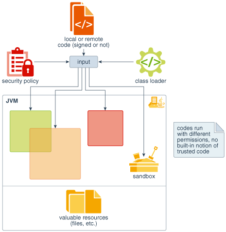
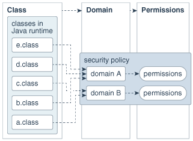
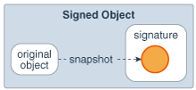

Java SE Platform Security Architecture
This document gives an overview of the motivation of the major security features implemented for the JDK, describes the classes that are part of the Java security architecture, discusses the impact of this architecture on existing code, and gives thoughts on writing security-sensitive code.
Introduction
Since the inception of Java technology, there has been strong and growing interest around the security of the Java platform as well as new security issues raised by the deployment of Java technology.
From a technology provider's point of view, Java security includes two aspects:
- Provide the Java platform as a secure, ready-built platform on which to run Java-enabled applications in a secure fashion.
- Provide security tools and services implemented in the Java programming language that enable a wider range of security-sensitive applications, for example, in the enterprise world.
This document discusses issues related to the first aspect, where the customers for such technologies include vendors that bundle or embed Java technology in their products (such as browsers and operating systems).
The Original Sandbox Model
The original security model provided by the Java platform is known as the sandbox model, which existed in order to provide a very restricted environment in which to run untrusted code obtained from the open network. The essence of the sandbox model is that local code is trusted to have full access to vital system resources (such as the file system) while downloaded remote code (an applet) is not trusted and can access only the limited resources provided inside the sandbox. This sandbox model is illustrated in the figure below.

Description of the illustration jssec_dt_030_anc4.eps
The sandbox model was deployed through the Java Development Kit (JDK), and was generally adopted by applications built with JDK 1.0, including Java-enabled web browsers.
Overall security is enforced through a number of mechanisms. First of all, the language is designed to be type-safe and easy to use. The hope is that the burden on the programmer is such that the likelihood of making subtle mistakes is lessened compared with using other programming languages such as C or C++. Language features such as automatic memory management, garbage collection, and range checking on strings and arrays are examples of how the language helps the programmer to write safe code.
Second, compilers and a bytecode verifier ensure that only legitimate Java bytecodes are executed. The bytecode verifier, together with the Java Virtual Machine, guarantees language safety at run time.
Moreover, a classloader defines a local name space, which can be used to ensure that an untrusted applet cannot interfere with the running of other programs.
Finally, access to crucial system resources is mediated by the Java Virtual Machine and is checked in advance by a SecurityManager class that restricts the actions of a piece of untrusted code to the bare minimum.
JDK 1.1 introduced the concept of a "signed applet", as illustrated by the figure below. In that release, a correctly digitally signed applet is treated as if it is trusted local code if the signature key is recognized as trusted by the end system that receives the applet. Signed applets, together with their signatures, are delivered in the JAR (Java Archive) format. In JDK 1.1, unsigned applets still run in the sandbox.

Evolving the Sandbox Model
The new Java SE Platform Security Architecture, illustrated in the figure below, is introduced primarily for the following purposes.
Description of the illustration jssec_dt_032_anc9.eps
-
Fine-grained access control.
This capability existed in the JDK from the beginning, but to use it, the application writer had to do substantial programming (e.g., by subclassing and customizing the SecurityManager and ClassLoader classes). The HotJava browser 1.0 is such an application, as it allows the browser user to choose from a small number of different security levels.
However, such programming is extremely security-sensitive and requires sophisticated skills and in-depth knowledge of computer security. The new architecture will make this exercise simpler and safer.
-
Easily configurable security policy.
Once again, this capability existed previously in the JDK but was not easy to use. Moreover, writing security code is not straightforward, so it is desirable to allow application builders and users to configure security policies without having to program.
-
Easily extensible access control structure.
Up to JDK 1.1, in order to create a new access permission, you had to add a new
checkmethod to the SecurityManager class. The new architecture allows typed permissions (each representing an access to a system resource) and automatic handling of all permissions (including yet-to-be-defined permissions) of the correct type. No new method in the SecurityManager class needs to be created in most cases. (In fact, we have so far not encountered a situation where a new method must be created.) -
Extension of security checks to all Java programs, including applications as well as applets.
There is no longer a built-in concept that all local code is trusted. Instead, local code (e.g., non-system code, application packages installed on the local file system) is subjected to the same security control as applets, although it is possible, if desired, to declare that the policy on local code (or remote code) be the most liberal, thus enabling such code to effectively run as totally trusted. The same principle applies to signed applets and any Java application.
Finally, an implicit goal is to make internal adjustment to the design of security classes (including the SecurityManager and ClassLoader classes) to reduce the risks of creating subtle security holes in future programming.
Protection Mechanisms – Overview of Basic Concepts
We now go over, in some detail, the new protection architecture and give a brief explanation of its functionality. We start with an overview of the basic concepts behind the new architecture. We then introduce the major new classes in a natural order, starting with permission specifications, going on to the policy and related features, followed by access control and its usage, and then covering secure class loading and resolution.
A fundamental concept and important building block of system security is the protection domain [Saltzer and Schroeder 75]. A domain can be scoped by the set of objects that are currently directly accessible by a principal, where a principal is an entity in the computer system to which permissions (and as a result, accountability) are granted. The sandbox utilized in JDK 1.0 is one example of a protection domain with a fixed boundary.
The protection domain concept serves as a convenient mechanism for grouping and isolation between units of protection. For example, it is possible (but not yet provided as a built-in feature) to separate protection domains from interacting with each other so that any permitted interaction must be either through trusted system code or explicitly allowed by the domains concerned. Note that existing object accessibility rules remain valid under the new security architecture.
Protection domains generally fall into two distinct categories: system domain and application domain. It is important that all protected external resources, such as the file system, the networking facility, and the screen and keyboard, be accessible only via system domains. The figure below illustrates the domain composition of a Java application environment.

Description of the illustration jssec_dt_028_anc2.eps
A domain conceptually encloses a set of classes whose instances are granted the same set of permissions. Protection domains are determined by the policy currently in effect. The Java application environment maintains a mapping from code (classes and instances) to their protection domains and then to their permissions, as illustrated by the figure below.
Description of the illustration jssec_dt_026_anc.eps
A thread of execution (which is often, but not necessarily tied to, a single Java thread, which in turn is not necessarily tied to the thread concept of the underlying operation system) may occur completely within a single protection domain or may involve an application domain and also the system domain. For example, an application that prints a message out will have to interact with the system domain that is the only access point to an output stream. In this case, it is crucial that at any time the application domain does not gain additional permissions by calling the system domain. Otherwise, there can be serious security implications.
In the reverse situation where a system domain invokes a method from an application domain, such as when the AWT system domain calls an applet's paint method to display the applet, it is again crucial that at any time the effective access rights are the same as current rights enabled in the application domain.
In other words, a less "powerful" domain cannot gain additional permissions as a result of calling or being called by a more powerful domain.
This discussion of one thread involving two protection domains naturally generalizes to a thread that traverses multiple protection domains. A simple and prudent rule of thumb for calculating permissions is the following:
- The permission set of an execution thread is considered to be the intersection of the permissions of all protection domains traversed by the execution thread.
- When a piece of code calls the doPrivileged method (see below), the permission set of the execution thread is considered to include a permission if it is allowed by the said code's protection domain and by all protection domains that are called or entered directly or indirectly subsequently.
As you can see, the doPrivileged method enables a piece of trusted code to temporarily enable access to more resources than are available directly to the application that called it. This is necessary in some situations. For example, an application may not be allowed direct access to files that contain fonts, but the system utility to display a document must obtain those fonts, on behalf of the user. We provide the doPrivileged method for the system domain to deal with this situation, and the method is in fact available to all domains.
During execution, when access to a critical system resource (such as file I/O and network I/O) is requested, the resource-handling code directly or indirectly invokes a special AccessController class method that evaluates the request and decides if the request should be granted or denied.
Such an evaluation follows and generalizes the "rule of thumb" given above. The actual way in which the evaluation is conducted can vary between implementations. The basic principle is to examine the call history and the permissions granted to the relevant protection domains, and to return silently if the request is granted or throw a security exception if the request is denied.
Finally, each domain (system or application) may also implement additional protection of its internal resources within its own domain boundary. For example, a banking application may need to support and protect internal concepts such as checking accounts, deposits and withdrawals. Because the semantics of such protection is unlikely to be predictable or enforceable by the JDK, the protection system at this level is best left to the system or application developers. Nevertheless, whenever appropriate, we provide helpful primitives to simplify developers' tasks. One such primitive is the SignedObject class, whose detail we will describe later.
Permissions and Security Policy
The Permission Classes
The permission classes represent access to system resources. The java.security.Permission class is an abstract class and is subclassed, as appropriate, to represent specific accesses.
As an example of a permission, the following code can be used to produce a permission to read the file named abc in the /tmp directory:
perm = new java.io.FilePermission("/tmp/abc", "read");
New permissions are subclassed either from the Permission class or one of its subclasses, such as java.security.BasicPermission. Subclassed permissions (other than BasicPermission) generally belong to their own packages. Thus, FilePermission is found in the java.io package.
A crucial abstract method that needs to be implemented for each new class of permission is the implies method. Basically, "a implies b" means that if one is granted permission "a", one is naturally granted permission "b". This is important when making access control decisions.
Associated with the abstract class java.security.Permission are the abstract class named java.security.PermissionCollection and the final class java.security.Permissions.
Class java.security.PermissionCollection represents a collection (i.e., a set that allows duplicates) of Permission objects for a single category (such as file permissions), for ease of grouping. In cases where permissions can be added to the PermissionCollection object in any order, such as for file permissions, it is crucial that the PermissionCollection object ensure that the correct semantics are followed when the implies function is called.
Class java.security.Permissions represents a collection of collections of Permission objects, or in other words, a super collection of heterogeneous permissions.
Applications are free to add new categories of permissions that the system supports. How to add such application-specific permissions is discussed later in this document.
Now we describe the syntax and semantics of all built-in permissions.
java.security.Permission
This abstract class is the ancestor of all permissions. It defines the essential functionalities required for all permissions.
Each permission instance is typically generated by passing one or more string parameters to the constructor. In a common case with two parameters, the first parameter is usually "the name of the target" (such as the name of a file for which the permission is aimed), and the second parameter is the action (such as "read" action on a file). Generally, a set of actions can be specified together as a comma-separated composite string.
java.security.PermissionCollection
This class holds a homogeneous collection of permissions. In other words, each instance of the class holds only permissions of the same type.
java.security.Permissions
This class is designed to hold a heterogeneous collection of permissions. Basically, it is a collection of java.security.PermissionCollection objects.
java.security.UnresolvedPermission
Recall that the internal state of a security policy is normally expressed by the permission objects that are associated with each code source. Given the dynamic nature of Java technology, however, it is possible that when the policy is initialized the actual code that implements a particular permission class has not yet been loaded and defined in the Java application environment. For example, a referenced permission class may be in a JAR file that will later be loaded.
The UnresolvedPermission class is used to hold such "unresolved" permissions. Similarly, the class java.security.UnresolvedPermissionCollection stores a collection of UnresolvedPermission permissions.
During access control checking on a permission of a type that was previously unresolved, but whose class has since been loaded, the unresolved permission is "resolved" and the appropriate access control decision is made. That is, a new object of the appropriate class type is instantiated, if possible, based on the information in the UnresolvedPermission. This new object replaces the UnresolvedPermission, which is removed. If the permission is still unresolvable at this time, the permission is considered invalid, as if it is never granted in a security policy.
java.io.FilePermission
The targets for this class can be specified in the following ways, where directory and file names are strings that cannot contain white spaces.
file
directory (same as directory/)
directory/file
directory/* (all files in this directory)
* (all files in the current directory)
directory/- (all files in the file system under this directory)
- (all files in the file system under the current directory)
"<<ALL FILES>>" (all files in the file system)
Note that <<ALL FILES>> is a special string denoting all files in the system. On a Solaris, Linux, or macOS system, this includes all files under the root directory. On a Windows system, this includes all files on all drives.
The actions are: read, write, delete, and execute. Therefore, the following are valid code samples for creating file permissions:
import java.io.FilePermission;
FilePermission p = new FilePermission("myfile", "read,write");
FilePermission p = new FilePermission("/home/gong/", "read");
FilePermission p = new FilePermission("/tmp/mytmp", "read,delete");
FilePermission p = new FilePermission("/bin/*", "execute");
FilePermission p = new FilePermission("*", "read");
FilePermission p = new FilePermission("/-", "read,execute");
FilePermission p = new FilePermission("-", "read,execute");
FilePermission p = new FilePermission("<<ALL FILES>>", "read");
The implies method in this class correctly interprets the file system. For example, FilePermission("/-", "read,execute") implies FilePermission("/home/gong/public_html/index.html", "read"), and FilePermission("bin/*", "execute") implies FilePermission("bin/emacs19.31", "execute").
Note:
Most of these strings are given in platform-dependent format. For example, to represent read access to the file named foo in the temp directory on the C drive of a Windows system, you would use
FilePermission p = new FilePermission("c:\\temp\\foo", "read");
The double backslashes are necessary to represent a single backslash because the strings are processed by a tokenizer (java.io.StreamTokenizer), which allows \ to be used as an escape string (e.g., \n to indicate a new line) and which thus requires two backslashes to indicate a single backslash. After the tokenizer has processed the above FilePermission target string, converting double backslashes to single backslashes, the end result is the actual path:
"c:\temp\foo"
It is necessary that the strings be given in platform-dependent format until there is a universal file description language. Note also that the use of meta symbols such as * and - prevents the use of specific file names. We think this is a small limitation that can be tolerated for the moment. Finally, note that -/ and <<ALL FILES>> are the same target on Solaris, Linux, and macOS systems in that they both refer to the entire file system. (They can refer to multiple file systems if they are all available). The two targets are potentially different on other operating systems, such as Windows and macOS.
Also note that a target name that specifies just a directory, with a "read" action, as in
FilePermission p = new FilePermission("/home/gong/", "read");
means you are only giving permission to list the files in that directory, not read any of them. To allow read access to files, you must specify either an explicit file name, or an * or -, as in
FilePermission p = new FilePermission("/home/gong/myfile", "read");
FilePermission p = new FilePermission("/home/gong/*", "read");
FilePermission p = new FilePermission("/home/gong/-", "read");
And finally, note that code always automatically has permission to read files from its same (URL) location, and subdirectories of that location; it does not need explicit permission to do so.
java.net.SocketPermission
This class represents access to a network via sockets. The target for this class can be given as hostname:port_range, where hostname can be given in the following ways:
hostname (a single host)
IP address (a single host)
localhost (the local machine)
"" (equivalent to "localhost")
hostname.domain (a single host within the domain)
hostname.subdomain.domain
*.domain (all hosts in the domain)
*.subdomain.domain
* (all hosts)
That is, the host is expressed as a DNS name, as a numerical IP address, as "localhost" (for the local machine) or as "" (which is equivalent to specifying "localhost").
The wildcard * may be included once in a DNS name host specification. If it is included, it must be in the leftmost position, as in *.sun.com.
The port_range can be given as follows:
N (a single port)
N- (all ports numbered N and above)
-N (all ports numbered N and below)
N1-N2 (all ports between N1 and N2, inclusive)
Here N, N1, and N2 are non-negative integers ranging from 0 to 65535 (216-1).
The actions on sockets are accept, connect, listen, and resolve (which is basically DNS lookup). Note that implicitly, the action "resolve" is implied by "accept", "connect", and "listen" – i.e., those who can listen or accept incoming connections from or initiate out-going connections to a host should be able to look up the name of the remote host.
Below are some examples of socket permissions.
import java.net.SocketPermission;
SocketPermission p = new SocketPermission("java.example.com","accept");
p = new SocketPermission("192.0.2.99","accept");
p = new SocketPermission("*.com","connect");
p = new SocketPermission("*.example.com:80","accept");
p = new SocketPermission("*.example.com:-1023","accept");
p = new SocketPermission("*.example.com:1024-","connect");
p = new SocketPermission("java.example.com:8000-9000",
"connect,accept");
p = new SocketPermission("localhost:1024-",
"accept,connect,listen");
Note:
SocketPermission("java.example.com:80,8080","accept") and SocketPermission("java.example.com,javasun.example.com","accept") are not valid socket permissions.
Moreover, because listen is an action that applies only to ports on the local host, whereas accept is an action that applies to ports on both the local and remote host, both actions are necessary.
java.security.BasicPermission
The BasicPermission class extends the Permission class. It can be used as the base class for permissions that want to follow the same naming convention as BasicPermission (see below).
The name for a BasicPermission is the name of the given permission (for example, "exitVM", "setFactory", "queuePrintJob", etc). The naming convention follows the hierarchical property naming convention. An asterisk may appear at the end of the name, following a ".", or by itself, to signify a wildcard match. For example: "java.*" or "*" is valid, "*java" or "a*b" is not valid.
The action string (inherited from Permission) is unused. Thus, BasicPermission is commonly used as the base class for "named" permissions (ones that contain a name but no actions list; you either have the named permission or you don't.) Subclasses may implement actions on top of BasicPermission, if desired.
Some of the BasicPermission subclasses are java.lang.RuntimePermission, java.security.SecurityPermission, java.util.PropertyPermission, and java.net.NetPermission.
java.util.PropertyPermission
The targets for this class are basically the names of Java properties as set in various property files. Examples are the java.home and os.name properties. Targets can be specified as "*" (any property), "a.*" (any property whose name has a prefix "a."), "a.b.*", and so on. Note that the wildcard can occur only once and can only be at the rightmost position.
This is one of the BasicPermission subclasses that implements actions on top of BasicPermission. The actions are read and write. Their meaning is defined as follows: "read" permission allows the getProperty method in java.lang.System to be called to get the property value, and "write" permission allows the setProperty method to be called to set the property value.
java.lang.RuntimePermission
The target for a RuntimePermission can be represented by any string, and there is no action associated with the targets. For example, RuntimePermission("exitVM") denotes the permission to exit the Java Virtual Machine.
The target names are:
createClassLoader
getClassLoader
setContextClassLoader
setSecurityManager
createSecurityManager
exitVM
setFactory
setIO
modifyThread
stopThread
modifyThreadGroup
getProtectionDomain
readFileDescriptor
writeFileDescriptor
loadLibrary.{library name}
accessClassInPackage.{package name}
defineClassInPackage.{package name}
accessDeclaredMembers.{class name}
queuePrintJob
java.awt.AWTPermission
This is in the same spirit as the RuntimePermission; it's a permission without actions. The targets for this class are:
accessClipboard
accessEventQueue
listenToAllAWTEvents
showWindowWithoutWarningBanner
java.net.NetPermission
This class contains the following targets and no actions:
requestPasswordAuthentication
setDefaultAuthenticator
specifyStreamHandler
java.lang.reflect.ReflectPermission
This is the Permission class for reflective operations. A ReflectPermission is a named permission (like RuntimePermission) and has no actions. The only name currently defined is suppressAccessChecks, which allows suppressing the standard Java programming language access checks – for public, default (package) access, protected, and private members – performed by reflected objects at their point of use.
java.io.SerializablePermission
This class contains the following targets and no actions:
enableSubclassImplementation
enableSubstitution
java.security.SecurityPermission
SecurityPermissions control access to security-related objects, such as Security, Policy, Provider, Signer, and Identity objects. This class contains the following targets and no actions:
getPolicy
setPolicy
getProperty.{key}
setProperty.{key}
insertProvider.{provider name}
removeProvider.{provider name}
setSystemScope
setIdentityPublicKey
setIdentityInfo
printIdentity
addIdentityCertificate
removeIdentityCertificate
clearProviderProperties.{provider name}
putProviderProperty.{provider name}
removeProviderProperty.{provider name}
getSignerPrivateKey
setSignerKeyPair
java.security.AllPermission
This permission implies all permissions. It is introduced to simplify the work of system administrators who might need to perform multiple tasks that require all (or numerous) permissions. It would be inconvenient to require the security policy to iterate through all permissions. Note that AllPermission also implies new permissions that are defined in the future.
Clearly, much caution is necessary when considering granting this permission.
javax.security.auth.AuthPermission
AuthPermission handles authentication permissions and authentication-related object such as Subject, SubjectDomainCombiner, LoginContext, and Configuration. This class contains the following targets and no actions:
doAs
doAsPrivileged
getSubject
getSubjectFromDomainCombiner
setReadOnly
modifyPrincipals
modifyPublicCredentials
modifyPrivateCredentials
refreshCredential
destroyCredential
createLoginContext.{name}
getLoginConfiguration
setLoginConfiguration
refreshLoginConfiguration
Discussion of Permission Implications
Recall that permissions are often compared against each other, and to facilitate such comparisons, we require that each permission class defines an implies method that represents how the particular permission class relates to other permission classes. For example, java.io.FilePermission("/tmp/*", "read") implies java.io.FilePermission("/tmp/a.txt", "read") but does not imply any java.net.NetPermission.
There is another layer of implication that may not be immediately obvious to some readers. Suppose that one applet has been granted the permission to write to the entire file system. This presumably allows the applet to replace the system binary, including the JVM runtime environment. This effectively means that the applet has been granted all permissions.
Another example is that if an applet is granted the runtime permission to create class loaders, it is effectively granted many more permissions, as a class loader can perform sensitive operations.
Other permissions that are "dangerous" to give out include those that allow the setting of system properties, runtime permissions for defining packages and for loading native code libraries (because the Java security architecture is not designed to and does not prevent malicious behavior at the level of native code), and of course the AllPermission.
For more information about permissions, including tables enumerating the risks of assigning specific permissions as well as a table of all the JDK built-in methods that require permissions, see Permissions in the JDK.
How To Create New Types of Permissions
It is essential that no one except Oracle should extend the permissions that are built into the JDK, either by adding new functionality or by introducing additional target keywords into a class such as java.lang.RuntimePermission. This maintains consistency.
To create a new permission, the following steps are recommended, as shown by an example. Suppose an application developer from company ABC wants to create a customized permission to "watch TV".
First, create a new class com.abc.Permission that extends the abstract class java.security.Permission (or one of its subclasses), and another new class com.abc.TVPermission that extends the com.abc.Permission. Make sure that the implies method, among others, is correctly implemented. (Of course, com.abc.TVPermission can directly extend java.security.Permission; the intermediate com.abc.Permission is not required.)
public class com.abc.Permission extends java.security.Permission
public class com.abc.TVPermission extends com.abc.Permission
The following figure shows the subclass relationship.

Description of the illustration jssec_dt_031_anc8.eps
Second, include these new classes with the application package.
Each user that wants to allow this new type of permission for specific code does so by adding an entry in a policy file. (Details of the policy file syntax are given in a later section.) An example of a policy file entry granting code from http://example.com/ permission to watch channel 5 would be:
grant codeBase "http://example.com/" {
permission com.abc.TVPermission "channel-5", "watch";
}
In the application's resource management code, when checking to see if a permission should be granted, call AccessController's checkPermission method using a com.abc.TVPermission object as the parameter.
com.abc.TVPermission tvperm = new
com.abc.TVPermission("channel-5", "watch");
AccessController.checkPermission(tvperm);
Note that, when adding a new permission, one should create a new (permission) class and not add a new method to the security manager. (In the past, in order to enable checking of a new type of access, you had to add a new method to the SecurityManager class.)
If more elaborate TVPermissions such as "channel-1:13" or "channel-*" are allowed, then it may be necessary to implement a TVPermissionCollection object that knows how to deal with the semantics of these pseudo names.
New code should always invoke a permission check by calling the checkPermission method of the AccessController class in order to exercise the built-in access control algorithm. There is no essential need to examine whether there is a ClassLoader or a SecurityManager. On the other hand, if the algorithm should be left to the installed security manager class, then the method SecurityManager.checkPermission should be invoked instead.
java.security.CodeSource
This class extends the concept of a codebase within HTML to encapsulate not only the code location (URL) but also the certificate(s) containing public keys that should be used to verify signed code originating from that location. Note that this is not the equivalent of the CodeBase tag in HTML files. Each certificate is represented as a java.security.cert.Certificate, and each URL as a java.net.URL.
java.security.Policy
The system security policy for a Java application environment, specifying which permissions are available for code from various sources, is represented by a Policy object. More specifically, it is represented by a Policy subclass providing an implementation of the abstract methods in the Policy class.
In order for an applet (or an application running under a SecurityManager) to be allowed to perform secured actions, such as reading or writing a file, the applet (or application) must be granted permission for that particular action. The only exception is that code always automatically has permission to read files from its same CodeSource, and subdirectories of that CodeSource; it does not need explicit permission to do so.
There could be multiple instances of the Policy object, although only one is "in effect" at any time. The currently-installed Policy object can be obtained by calling the getPolicy method, and it can be changed by a call to the setPolicy method (by code with permission to reset the Policy).
The source location for the policy information utilized by the Policy object is up to the Policy implementation. The policy configuration may be stored, for example, as a flat ASCII file, as a serialized binary file of the Policy class, or as a database. There is a Policy reference implementation that obtains its information from static policy configuration files.
Policy File Format
In the Policy reference implementation, the policy can be specified within one or more policy configuration files. The configuration files indicate what permissions are allowed for code from specified code sources. Each configuration file must be encoded in UTF-8.
A policy configuration file essentially contains a list of entries. It may contain a keystore entry, and contains zero or more grant entries.
A keystore is a database of private keys and their associated digital certificates such as X.509 certificate chains authenticating the corresponding public keys. The keytool utility is used to create and administer keystores. The keystore specified in a policy configuration file is used to look up the public keys of the signers specified in the grant entries of the file. A keystore entry must appear in a policy configuration file if any grant entries specify signer aliases, or if any grant entries specify a principal alias (see below).
At this time, there can be only one keystore entry in the policy file (others after the first one are ignored), and it can appear anywhere outside the file's grant entries . It has the following syntax:
keystore "some_keystore_url", "keystore_type";
Here, some_keystore_url specifies the URL location of the keystore, and keystore_type specifies the keystore type. The latter is optional. If not specified, the type is assumed to be that specified by the keystore.type property in the security properties file.
The URL is relative to the policy file location. Thus if the policy file is specified in the security properties file as:
policy.url.1=http://foo.bar.example.com/blah/some.policy
and that policy file has an entry:
keystore ".keystore";
then the keystore will be loaded from:
http://foo.bar.example.com/blah/.keystore
The URL can also be absolute.
A keystore type defines the storage and data format of the keystore information, and the algorithms used to protect private keys in the keystore and the integrity of the keystore itself. The Oracle JDK's default keystore type is PKCS12.
Each grant entry in a policy file essentially consists of a CodeSource and its permissions. Actually, a CodeSource consists of a URL and a set of certificates, while a policy file entry includes a URL and a list of signer names. The system creates the corresponding CodeSource after consulting the keystore to determine the certificate(s) of the specified signers.
Each grant entry in the policy file is of the following format, where the leading grant is a reserved word that signifies the beginning of a new entry and optional items appear in brackets. Within each entry, a leading permission is another reserved word that marks the beginning of a new permission in the entry. Each grant entry grants a set of permissions to a specified code source and principals.
grant [SignedBy "signer_names"] [, CodeBase "URL"]
[, Principal [principal_class_name] "principal_name"]
[, Principal [principal_class_name] "principal_name"] ... {
permission permission_class_name [ "target_name" ]
[, "action"] [, SignedBy "signer_names"];
permission ...
};
White spaces are allowed immediately before or after any comma. The name of the permission class must be a fully qualified class name, such as java.io.FilePermission, and cannot be abbreviated (for example, to FilePermission).
Note that the action field is optional in that it can be omitted if the permission class does not require it. If it is present, then it must come immediately after the target field.
The exact meaning of a CodeBase URL value depends on the characters at the end. A CodeBase with a trailing "/" matches all class files (not JAR files) in the specified directory. A CodeBase with a trailing "/*" matches all files (both class and JAR files) contained in that directory. A CodeBase with a trailing "/-" matches all files (both class and JAR files) in the directory and recursively all files in subdirectories contained in that directory.
The CodeBase field (URL) is optional in that, if it is omitted, it signifies "any code base".
The first signer name field is a string alias that is mapped, via a separate mechanism, to a set of public keys (within certificates in the keystore) that are associated with the signers. These keys are used to verify that certain signed classes are really signed by these signers.
This signer field can be a comma-separated string containing names of multiple signers, an example of which is Adam,Eve,Charles, which means signed by Adam and Eve and Charles (i.e., the relationship is AND, not OR).
This field is optional in that, if it is omitted, it signifies "any signer", or in other words, "It doesn't matter whether the code is signed or not".
The second signer field, inside a permission entry, represents the alias to the keystore entry containing the public key corresponding to the private key used to sign the bytecodes that implemented the said permission class. This permission entry is effective (i.e., access control permission will be granted based on this entry) only if the bytecode implementation is verified to be correctly signed by the said alias.
A principal value specifies a class_name/principal_name pair which must be present within the executing threads principal set. The principal set is associated with the executing code by way of a Subject. The principal field is optional in that, if it is omitted, it signifies "any principals".
Note:
Regarding keystore alias replacement: If the principal class_name/principal_name pair is specified as a single quoted string, it is treated as a keystore alias. The keystore is consulted and queried (via the alias) for an X509 Certificate. If one is found, the principal_class is automatically treated as javax.security.auth.x500.X500Principal, and the principal_name is automatically treated as the subject distinguished name from the certificate. If an X509 Certificate mapping is not found, the entire grant entry is ignored.
The order between the CodeBase, SignedBy, and Principal fields does not matter.
An informal BNF grammar for the policy file format is given below, where non-capitalized terms are terminals:
PolicyFile -> PolicyEntry | PolicyEntry; PolicyFile
PolicyEntry -> grant {PermissionEntry}; |
grant SignerEntry {PermissionEntry} |
grant CodebaseEntry {PermissionEntry} |
grant PrincipalEntry {PermissionEntry} |
grant SignerEntry, CodebaseEntry {PermissionEntry} |
grant CodebaseEntry, SignerEntry {PermissionEntry} |
grant SignerEntry, PrincipalEntry {PermissionEntry} |
grant PrincipalEntry, SignerEntry {PermissionEntry} |
grant CodebaseEntry, PrincipalEntry {PermissionEntry} |
grant PrincipalEntry, CodebaseEntry {PermissionEntry} |
grant SignerEntry, CodebaseEntry, PrincipalEntry {PermissionEntry} |
grant CodebaseEntry, SignerEntry, PrincipalEntry {PermissionEntry} |
grant SignerEntry, PrincipalEntry, CodebaseEntry {PermissionEntry} |
grant CodebaseEntry, PrincipalEntry, SignerEntry {PermissionEntry} |
grant PrincipalEntry, CodebaseEntry, SignerEntry {PermissionEntry} |
grant PrincipalEntry, SignerEntry, CodebaseEntry {PermissionEntry} |
keystore "url"
SignerEntry -> signedby (a comma-separated list of strings)
CodebaseEntry -> codebase (a string representation of a URL)
PrincipalEntry -> OnePrincipal | OnePrincipal, PrincipalEntry
OnePrincipal -> principal [ principal_class_name ] "principal_name" (a principal)
PermissionEntry -> OnePermission | OnePermission PermissionEntry
OnePermission -> permission permission_class_name
[ "target_name" ] [, "action_list"]
[, SignerEntry];
Now we give some examples. The following policy grants permission a.b.Foo to code signed by Roland:
grant signedBy "Roland" {
permission a.b.Foo;
};
The following grants a FilePermission to all code (regardless of the signer and/or CodeBase):
grant {
permission java.io.FilePermission ".tmp", "read";
};
The following grants two permissions to code that is signed by both Li and Roland:
grant signedBy "Roland,Li" {
permission java.io.FilePermission "/tmp/*", "read";
permission java.util.PropertyPermission "user.*";
};
The following grants two permissions to code that is signed by Li and that comes from http://example.com:
grant codeBase "http://example.com/*", signedBy "Li" {
permission java.io.FilePermission "/tmp/*", "read";
permission java.io.SocketPermission "*", "connect";
};
The following grants two permissions to code that is signed by both Li and Roland, and only if the bytecodes implementing com.abc.TVPermission are genuinely signed by Li.
grant signedBy "Roland,Li" {
permission java.io.FilePermission "/tmp/*", "read";
permission com.abc.TVPermission "channel-5", "watch",
signedBy "Li";
};
The reason for including the second signer field is to prevent spoofing when a permission class does not reside with the Java runtime installation. For example, a copy of the com.abc.TVPermission class can be downloaded as part of a remote JAR archive, and the user policy might include an entry that refers to it. Because the archive is not long-lived, the second time the com.abc.TVPermission class is downloaded, possibly from a different web site, it is crucial that the second copy is authentic, as the presence of the permission entry in the user policy might reflect the user's confidence or belief in the first copy of the class bytecode.
The reason we chose to use digital signatures to ensure authenticity, rather than storing (a hash value of) the first copy of the bytecodes and using it to compare with the second copy, is because the author of the permission class can legitimately update the class file to reflect a new design or implementation.
Note:
The strings for a file path must be specified in a platform-dependent format; this is necessary until there is a universal file description language. The above examples have shown strings appropriate on Solaris. On Windows, when you directly specify a file path in a string, you need to include two backslashes for each actual single backslash in the path, as in
grant signedBy "Roland" {
permission java.io.FilePermission "C:\\users\\Cathy\\*", "read";
};
This is because the strings are processed by a tokenizer (java.io.StreamTokenizer), which allows "\" to be used as an escape string (e.g., "\n" to indicate a new line) and which thus requires two backslashes to indicate a single backslash. After the tokenizer has processed the above FilePermission target string, converting double backslashes to single backslashes, the end result is the actual path:
"C:\users\Cathy\*"
Finally, here are some principal-based grant entries:
grant principal javax.security.auth.x500.X500Principal "cn=Alice" {
permission java.io.FilePermission "/home/Alice", "read, write";
};
This permits any code executing as the X500Principal, cn=Alice, permission to read and write to /home/Alice.
The following example shows a grant statement with both codesource and principal information.
grant codebase "http://www.games.example.com",
signedBy "Duke",
principal javax.security.auth.x500.X500Principal "cn=Alice" {
permission java.io.FilePermission "/tmp/games", "read, write";
};
This allows code downloaded from www.games.example.com, signed by Duke, and executed by cn=Alice, permission to read and write into the /tmp/games directory.
he following example shows a grant statement with KeyStore alias replacement:
keystore "http://foo.bar.example.com/blah/.keystore";
grant principal "alice" {
permission java.io.FilePermission "/tmp/games", "read, write";
};
alice will be replaced by javax.security.auth.x500.X500Principal cn=Alice assuming the X.509 certificate associated with the keystore alias, alice, has a subject distinguished name of cn=Alice. This allows code executed by the X500Principal cn=Alice permission to read and write into the /tmp/games directory.
Property Expansion in Policy Files
Property expansion is possible in policy files and in the security properties file. Property expansion is similar to expanding variables in a shell. That is, when a string like ${some.property} appears in a policy file, or in the security properties file, it will be expanded to the value of the specified system property. For example,
permission java.io.FilePermission "${user.home}", "read";
will expand ${user.home} to use the value of the user.home system property. If that property's value is /home/cathy, then the above is equivalent to
permission java.io.FilePermission "/home/cathy", "read";
In order to assist in platform-independent policy files, you can also use the special notation of ${/}, which is a shortcut for ${file.separator}. This allows permission designations such as
permission java.io.FilePermission "${user.home}${/}*", "read";
If user.home is /home/cathy, and you are on Solaris, the above gets converted to:
permission java.io.FilePermission "/home/cathy/*", "read";
If on the other hand user.home is C:\users\cathy and you are on a Windows system, the above gets converted to:
permission java.io.FilePermission "C:\users\cathy\*", "read";
Also, as a special case, if you expand a property in a codebase, such as
grant codeBase "file:/${java.home}/lib/ext/"
then any file.separator characters will be automatically converted to slashes (/), which is desirable since codebases are URLs. Thus on a Windows system, even if java.home is set to C:\j2sdk1.2, the above would get converted to
grant codeBase "file:/C:/j2sdk1.2/lib/ext/"
Thus you don't need to use ${/} in codebase strings (and you shouldn't).
Property expansion takes place anywhere a double quoted string is allowed in the policy file. This includes the signedby, codebase, target names, and action fields.
Whether or not property expansion is allowed is controlled by the value of the policy.expandProperties property in the Security Properties file. If the value of this Security Property is true (the default), expansion is allowed.
Please note: You can't use nested properties; they will not work. For example,
"${user.${foo}}"
doesn't work, even if the foo property is set to home. The reason is the property parser doesn't recognize nested properties; it simply looks for the first ${, and then keeps looking until it finds the first } and tries to interpret the result ${user.$foo} as a property, but fails if there is no such property.
Also note: If a property can't be expanded in a grant entry, permission entry, or keystore entry, that entry is ignored. For example, if the system property foo is not defined and you have:
grant codeBase "${foo}" {
permission ...;
permission ...;
};
then all the permissions in this grant entry are ignored. If you have
grant {
permission Foo "${foo}";
permission Bar;
};
then only the permission Foo "${foo}"; entry is ignored. And finally, if you have
keystore "${foo}";
then the keystore entry is ignored.
One final note: On Windows systems, when you directly specify a file path in a string, you need to include two backslashes for each actual single backslash in the path, as in
"C:\\users\\cathy\\foo.bat"
This is because the strings are processed by a tokenizer (java.io.StreamTokenizer), which allows the backslash (\) to be used as an escape string (e.g., \n to indicate a new line) and which thus requires two backslashes to indicate a single backslash. After the tokenizer has processed the above string, converting double backslashes to single backslashes, the end result is
"C:\users\cathy\foo.bat"
Expansion of a property in a string takes place after the tokenizer has processed the string. Thus if you have the string
"${user.home}\\foo.bat"
then first the tokenizer processes the string, converting the double backslashes to a single backslash, and the result is
"${user.home}\foo.bat"
Then the ${user.home} property is expanded and the end result is
"C:\users\cathy\foo.bat"
assuming the user.home value is C:\users\cathy. Of course, for platform independence, it would be better if the string was initially specified without any explicit slashes, i.e., using the ${/} property instead, as in
"${user.home}${/}foo.bat"
General Expansion in Policy Files
Generalized forms of expansion are also supported in policy files. For example, permission names may contain a string of the form: ${{protocol:protocol_data}} If such a string occurs in a permission name, then the value in protocol determines the exact type of expansion that should occur, and protocol_data is used to help perform the expansion. protocol_data may be empty, in which case the above string should simply take the form:
${{protocol}}
There are two protocols supported in the default policy file implementation:
-
${{self}}The protocol,
self, denotes a replacement of the entire string,${{self}}, with one or more principal class/name pairs. The exact replacement performed depends upon the contents of the grant clause to which the permission belongs.If the grant clause does not contain any principal information, the permission will be ignored (permissions containing
${{self}}in their target names are only valid in the context of a principal-based grant clause). For example,BarPermissionwill always be ignored in the following grant clause:
If the grant clause contains principal information,grant codebase "www.foo.example.com", signedby "duke" { permission BarPermission "... ${{self}} ..."; };${{self}}will be replaced with that same principal information. For example,${{self}}inBarPermissionwill be replaced byjavax.security.auth.x500.X500Principal "cn=Duke"in the following grant clause:
If there is a comma-separated list of principals in the grant clause, thengrant principal javax.security.auth.x500.X500Principal "cn=Duke" { permission BarPermission "... ${{self}} ..."; };${{self}}will be replaced by the same comma-separated list or principals. In the case where both the principal class and name are wildcarded in the grant clause,${{self}}is replaced with all the principals associated with theSubjectin the currentAccessControlContext.The following example describes a scenario involving both
selfand KeyStore alias replacement together:
In the above example, "duke" will first be expanded intokeystore "http://foo.bar.example.com/blah/.keystore"; grant principal "duke" { permission BarPermission "... ${{self}} ..."; };javax.security.auth.x500.X500Principal "cn=Duke"assuming the X.509 certificate associated with the KeyStore alias,"duke", has a subject distinguished name of"cn=Duke". Next,${{self}}will be replaced with the same principal information that just got expanded in the grant clause:javax.security.auth.x500.X500Principal "cn=Duke". -
${{alias:alias_name}}The protocol,
alias, denotes a java.security.KeyStore alias substitution. TheKeyStoreused is the one specified in the KeyStore entry; see Policy File Format.alias_namerepresents an alias into theKeyStore.${{alias:alias_name}}is replaced withjavax.security.auth.x500.X500Principal "DN", whereDNrepresents the subject distinguished name of the certificate belonging toalias_name. For example:
In the above example the X.509 certificate associated with the alias,keystore "http://foo.bar.example.com/blah/.keystore"; grant codebase "www.foo.example.com" { permission BarPermission "... ${{alias:duke}} ..."; };duke, is retrieved from theKeyStore,foo.bar.example.com/blah/.keystore. Assuming duke's certificate specifies"o=dukeOrg, cn=duke"as the subject distinguished name, then${{alias:duke}}is replaced withjavax.security.auth.x500.X500Principal "o=dukeOrg, cn=duke".The permission entry is ignored under the following error conditions:
- The keystore entry is unspecified
- The
alias_nameis not provided - The certificate for
alias_namecannot be retrieved - The certificate retrieved is not an X.509 certificate
Assigning Permissions
When a principal executes a class that originated from a particular CodeSource, the security mechanism consults the policy object to determine what permissions to grant. This is done by invoking the getPermissions or implies method on the Policy object that is installed in the VM.
Clearly, a given code source in a ProtectionDomain can match the code source given in multiple entries in the policy, for example because the wildcard (*) is allowed.
The following algorithm is used to locate the appropriate set of permissions in the policy.
-
Match the public keys, if code is signed.
-
If a key is not recognized in the policy, then ignore the key.
If every key is ignored, then treat the code as unsigned.
-
If the keys are matched or no signer was specified, then try to match all URLs in the policy for the keys.
-
If the keys are matched (or no signer was specified) and the URLs are matched (or no codebase was specified), then try to match all principals in the policy with the principals associated with the current executing thread.
-
If either key, URL, or principals are not matched, then use the built-in default permission, which is the original sandbox permission.
The exact meaning of a policy entry codeBase URL value depends on the characters at the end. A codeBase with a trailing "/" matches all class files (not JAR files) in the specified directory. A codeBase with a trailing "/*" matches all files (both class and JAR files) contained in that directory. A codeBase with a trailing "/-" matches all files (both class and JAR files) in the directory and recursively all files in subdirectories contained in that directory.
As an example, given "http://example.com/-" in the policy, then any code base that is on this web site matches the policy entry. Matching code bases include "http://example.com/j2se/sdk/" and "http://example.com/people/gong/appl.jar".
If multiple entries are matched, then all the permissions given in those entries are granted. In other words, permission assignment is additive. For example, if code signed with key A gets permission X and code signed by key B gets permission Y and no particular codebase is specified, then code signed by both A and B gets permissions X and Y. Similarly, if code with codeBase "http://example.com/-" is given permission X, and "http://example.com/people/*" is given permission Y, and no particular signers are specified, then an applet from "http://example.com/people/applet.jar" gets both X and Y.
Note that URL matching here is purely syntactic. For example, a policy can give an entry that specifies a URL "ftp://ftp.example.com". Such an entry is useful only when one can obtain Java code directly from ftp for execution.
To specify URLs for the local file system, a file URL can be used. For example, to specify files in the /home/cathy/temp directory in a Solaris system, you'd use
"file:/home/cathy/temp/*"
To specify files in the temp directory on the C drive in a Windows system, use
"file:/c:/temp/*"
Note: codeBase URLs always use slashes (no backlashes), regardless of the platform they apply to.
You can also use an absolute path name such as
"/home/gong/bin/MyWonderfulJava"
Default System and User Policy Files
In the Policy reference implementation, the policy can be specified within one or more policy configuration files. The configuration files specify what permissions are allowed for code from specified code sources. A policy file can be composed via a simple text editor. There is by default a single system-wide policy file, and a single user policy file. The system policy file is by default located at
{java.home}/conf/security/java.policy(UNIX-based systems){java.home}\conf\security\java.policy(Windows)
Here, java.home is a system property specifying the directory into which the JDK was installed. The user policy file is by default located at
{user.home}/.java.policy(UNIX-based systems){user.home}\.java.policy(Windows)
Here, user.home is a system property specifying the user's home directory.
When the Policy is initialized, the system policy is loaded in first, and then the user policy is added to it. If neither policy is present, a built-in policy is used. This built-in policy is the same as the original sandbox policy. Policy file locations are specified in the security properties file, which is located at
{java.home}/conf/security/java.security(UNIX-based systems){java.home}\conf\security\java.security(Windows)
The policy file locations are specified as the values of properties whose names are of the form
policy.url.n
Here, n is a number. You specify each such property value in a line of the following form:
policy.url.n=URL
Here, URL is a URL specification. For example, the default system and user policy files are defined in the security properties file as
policy.url.1=file:${java.home}/conf/security/java.policy
policy.url.2=file:${user.home}/.java.policy
You can actually specify a number of URLs, including ones of the form "http://", and all the designated policy files will get loaded. You can also comment out or change the second one to disable reading the default user policy file.
The algorithm starts at policy.url.1, and keeps incrementing until it does not find a URL. Thus if you have policy.url.1 and policy.url.3, policy.url.3 will never be read.
It is also possible to specify an additional or a different policy file when invoking execution of an application. This can be done via the -Djava.security.policy command-line argument, which sets the value of the java.security.policy property. For example, consider the following example:
java -Djava.security.manager -Djava.security.policy=pURL SomeApp
Here, pURL is a URL specifying the location of a policy file, then the specified policy file will be loaded in addition to all the policy files that are specified in the security properties file. (The -Djava.security.manager argument ensures that the default security manager is installed, and thus the application is subject to policy checks, as described in Managing Applets and Applications. It is not required if the application SomeApp installs a security manager.)
If you use the following, with a double equals sign, then just the specified policy file will be used; all others will be ignored.
java -Djava.security.manager -Djava.security.policy==pURL SomeApp
Note:
The -Djava.security.policy policy file value will be ignored (for both java and appletviewer commands) if the policy.allowSystemProperty property in the security properties file is set to false. The default is true.
Customizing Policy Evaluation
The current design of the Policy class is not as comprehensive as it could be. We have given the issues much thought and are progressing cautiously, partly to ensure that we define method calls that are appropriate for the most common cases. For the meantime, an alternative policy class can be given to replace the default policy class, as long as the former is a subclass of the abstract Policy class and implements the getPermissions method (and other methods as necessary).
The Policy reference implementation can be changed by resetting the value of the policy.provider Security Property (in the Security Properties file, <java-home>/conf/security/java.security) to the fully qualified name of the desired Policy implementation class.
The Security Property policy.provider specifies the name of the policy class, and the default is the following:
policy.provider=sun.security.provider.PolicyFile
To customize, you can change the property value to specify another class, as in
policy.provider=com.mycom.MyPolicy
Note that the MyPolicy class must be a subclass of java.security.Policy. It is perhaps worth emphasizing that such an override of the policy class is a temporary solution and a more comprehensive policy API will probably make this unnecessary.
java.security.GeneralSecurityException
This is an exception class that is a subclass of java.lang.Exception. The intention is that there should be two types of exceptions associated with security and the security packages.
-
java.lang.SecurityException and its subclasses should be runtime exceptions (unchecked, not declared) that are likely to cause the execution of a program to stop.
Such an exception is thrown only when some sort of security violation is detected. For example, such an exception is thrown when some code attempts to access a file, but it does not have permission for the access. Application developers may catch these exceptions, if they want.
-
java.security.GeneralSecurityException, which is a subclass of java.lang.Exception (must be declared or caught) that is thrown in all other cases from within the security packages.
Such an exception is security related but non-vital. For example, passing in an invalid key is probably not a security violation and should be caught and dealt with by a developer.
There are currently still two exceptions within the java.security package that are subclasses from RuntimeException. We at this moment cannot change these due to backward compatibility requirements. We will revisit this issue in the future.
Access Control Mechanisms and Algorithms
java.security.ProtectionDomain
The ProtectionDomain class encapsulates the characteristics of a domain. Such a domain encloses a set of classes whose instances are granted a set of permissions when being executed on behalf of a given set of Principals.
A ProtectionDomain is constructed with a CodeSource, a ClassLoader, an array of Principals, and a collection of Permissions. The CodeSource encapsulates the codebase (java.net.URL) for all classes in this domain, as well as a set of certificates (of type java.security.cert.Certificate) for public keys that correspond to the private keys that signed all code in this domain. The Principals represent the user on whose behalf the code is running.
The permissions passed in at ProtectionDomain construction time represent a static set of permissions bound to the domain regardless of the Policy in force. The ProtectionDomain subsequently consults the current policy during each security check to retrieve dynamic permissions granted to the domain.
Classes from different CodeSources, or that are being executed on behalf of different principals, belong to different domains.
Today all code shipped as part of the JDK is considered system code and run inside the unique system domain. Each applet or application runs in its appropriate domain, determined by policy.
It is possible to ensure that objects in any non-system domain cannot automatically discover objects in another non-system domain. This partition can be achieved by careful class resolution and loading, for example, using different classloaders for different domains. However, SecureClassLoader (or its subclasses) can, at its choice, load classes from different domains, thus allowing these classes to co-exist within the same name space (as partitioned by a classloader).
java.security.AccessController
The AccessController class is used for three purposes, each of which is described in further detail in sections below:
- to decide whether an access to a critical system resource is to be allowed or denied, based on the security policy currently in effect,
- to mark code as being "privileged", thus affecting subsequent access determinations, and
- to obtain a "snapshot" of the current calling context so access-control decisions from a different context can be made with respect to the saved context.
Any code that controls access to system resources should invoke AccessController methods if it wishes to use the specific security model and access control algorithm utilized by these methods. If, on the other hand, the application wishes to defer the security model to that of the SecurityManager installed at runtime, then it should instead invoke corresponding methods in the SecurityManager class.
For example, the typical way to invoke access control has been the following code (taken from an earlier version of JDK):
ClassLoader loader = this.getClass().getClassLoader();
if (loader != null) {
SecurityManager security = System.getSecurityManager();
if (security != null) {
security.checkRead("path/file");
}
}
Under the current architecture, the check typically should be invoked whether or not there is a classloader associated with a calling class. It could be simply, for example:
FilePermission perm = new FilePermission("path/file", "read");
AccessController.checkPermission(perm);
The AccessController checkPermission method examines the current execution context and makes the right decision as to whether or not the requested access is allowed. If it is, this check returns quietly. Otherwise, an AccessControlException (a subclass of java.lang.SecurityException) is thrown.
Note that there are (legacy) cases, for example, in some browsers, where whether there is a SecurityManager installed signifies one or the other security state that may result in different actions being taken. For backward compatibility, the checkPermission method on SecurityManager can be used.
SecurityManager security = System.getSecurityManager();
if (security != null) {
FilePermission perm = new FilePermission("path/file", "read");
security.checkPermission(perm);
}
We currently do not change this aspect of the SecurityManager usage, but would encourage application developers to use new techniques introduced in the JDK in their future programming when the built-in access control algorithm is appropriate.
The default behavior of the SecurityManager checkPermission method is actually to call the AccessController checkPermission method. A different SecurityManager implementation may implement its own security management approach, possibly including the addition of further constraints used in determining whether or not an access is permitted.
Algorithm for Checking Permissions
Suppose access control checking occurs in a thread of computation that has a chain of multiple callers (think of this as multiple method calls that cross the protection domain boundaries), as illustrated in the next figure.

Description of the illustration jssec_dt_027_anc1.eps
When the checkPermission method of the AccessController is invoked by the most recent caller (e.g., a method in the File class), the basic algorithm for deciding whether to allow or deny the requested access is as follows.
If any caller in the call chain does not have the requested permission, AccessControlException is thrown, unless the following is true – a caller whose domain is granted the said permission has been marked as "privileged" (see the next section) and all parties subsequently called by this caller (directly or indirectly) all have the said permission.
There are obviously two implementation strategies:
-
In an "eager evaluation" implementation, whenever a thread enters a new protection domain or exits from one, the set of effective permissions is updated dynamically.
The benefit is that checking whether a permission is allowed is simplified and can be faster in many cases. The disadvantage is that, because permission checking occurs much less frequently than cross-domain calls, a large percentage of permission updates are likely to be useless effort.
-
In a "lazy evaluation" implementation, whenever permission checking is requested, the thread state (as reflected by the current state, including the current thread's call stack or its equivalent) is examined and a decision is reached to either deny or grant the particular access requested.
One potential downside of this approach is performance penalty at permission checking time, although this penalty would have been incurred anyway in the "eager evaluation" approach (albeit at earlier times and spread out among each cross-domain call). Our implementation so far has yielded acceptable performance, so we feel that lazy evaluation is the most economical approach overall.
Therefore, the algorithm for checking permissions is currently implemented as "lazy evaluation". Suppose the current thread traversed m callers, in the order of caller 1 to caller 2 to caller m. Then caller m invoked the checkPermission method. The basic algorithm checkPermission uses to determine whether access is granted or denied is the following (see subsequent sections for refinements):
for (int i = m; i > 0; i--) {
if (caller i's domain does not have the permission)
throw AccessControlException
else if (caller i is marked as privileged) {
if (a context was specified in the call to doPrivileged)
context.checkPermission(permission)
if (limited permissions were specified in the call to doPrivileged) {
for (each limited permission) {
if (the limited permission implies the requested permission)
return;
}
} else
return;
}
}
// Next, check the context inherited when the thread was created.
// Whenever a new thread is created, the AccessControlContext at
// that time is stored and associated with the new thread, as the
// "inherited" context.
inheritedContext.checkPermission(permission);
Handling Privileges
A static method in the AccessController class allows code in a class instance to inform the AccessController that a body of its code is "privileged" in that it is solely responsible for requesting access to its available resources, no matter what code caused it to do so.
That is, a caller can be marked as being "privileged" when it calls the doPrivileged method. When making access control decisions, the checkPermission method stops checking if it reaches a caller that was marked as "privileged" via a doPrivileged call without a context argument (see a subsequent section for information about a context argument). If that caller's domain has the specified permission, no further checking is done and checkPermission returns quietly, indicating that the requested access is allowed. If that domain does not have the specified permission, an exception is thrown, as usual.
The normal use of the "privileged" feature is as follows:
If you don't need to return a value from within the "privileged" block, do the following:
somemethod() {
...normal code here...
AccessController.doPrivileged(new PrivilegedAction() {
public Object run() {
// privileged code goes here, for example:
System.loadLibrary("awt");
return null; // nothing to return
}
});
...normal code here...
}
PrivilegedAction is an interface with a single method, named run, that returns an Object. The above example shows creation of an anonymous inner class implementing that interface; a concrete implementation of the run method is supplied. When the call to doPrivileged is made, an instance of the PrivilegedAction implementation is passed to it. The doPrivileged method calls the run method from the PrivilegedAction implementation after enabling privileges, and returns the run method's return value as the doPrivileged return value, which is ignored in this example. (For more information about inner classes, see Nested Classes in the Java Tutorials.
If you need to return a value, you can do something like the following:
somemethod() {
...normal code here...
String user = (String) AccessController.doPrivileged(
new PrivilegedAction() {
public Object run() {
return System.getProperty("user.name");
}
}
);
...normal code here...
}
If the action performed in your run method could throw a "checked" exception (one listed in the throws clause of a method), then you need to use the PrivilegedExceptionAction interface instead of the PrivilegedAction interface:
somemethod() throws FileNotFoundException {
...normal code here...
try {
FileInputStream fis = (FileInputStream)
AccessController.doPrivileged(
new PrivilegedExceptionAction() {
public Object run() throws FileNotFoundException {
return new FileInputStream("someFile");
}
}
);
} catch (PrivilegedActionException e) {
// e.getException() should be an instance of
// FileNotFoundException,
// as only "checked" exceptions will be "wrapped" in a
// <code>PrivilegedActionException</code>.
throw (FileNotFoundException) e.getException();
}
...normal code here...
}
Some important points about being privileged: Firstly, this concept only exists within a single thread. As soon as the privileged code completes, the privilege is guaranteed to be erased or revoked.
Secondly, in this example, the body of code in the run method is privileged. However, if it calls less trustworthy code that is less privileged, that code will not gain any privileges as a result; a permission is only granted if the privileged code has the permission and so do all the subsequent callers in the call chain up to the checkPermission call.
A variant of AccessController.doPrivileged enables code to assert a subset of its privileges without preventing the full traversal of the stack to check for other permissions. See Asserting a Subset of Privileges.
For more information about marking code as "privileged," see Appendix A: API for Privileged Blocks.
Inheritance of Access Control Context
When a thread creates a new thread, a new stack is created. If the current security context was not retained when this new thread was created, then when AccessController.checkPermission was called inside the new thread, a security decision would be made based solely upon the new thread's context, not taking into consideration that of the parent thread.
This clean stack issue would not be a security problem per se, but it would make the writing of secure code, and especially system code, more prone to subtle errors. For example, a non-expert developer might assume, quite reasonably, that a child thread (e.g., one that does not involve untrusted code) inherits the same security context from the parent thread (e.g., one that involves untrusted code). This would cause unintended security holes when accessing controlled resources from inside the new thread (and then passing the resources along to less trusted code), if the parent context was not in fact saved.
Thus, when a new thread is created, we actually ensure (via thread creation and other code) that it automatically inherits the parent thread's security context at the time of creation of the child thread, in such a way that subsequent checkPermission calls in the child thread will take into consideration the inherited parent context.
In other words, the logical thread context is expanded to include both the parent context (in the form of an AccessControlContext, described in the next section) and the current context, and the algorithm for checking permissions is expanded to the following. (Recall there are m callers up to the call to checkPermission, and see the next section for information about the AccessControlContext checkPermission method.)
for (int i = m; i > 0; i--) {
if (caller i's domain does not have the permission)
throw AccessControlException
else if (caller i is marked as privileged) {
if (a context was specified in the call to doPrivileged)
context.checkPermission(permission)
if (limited permissions were specified in the call to doPrivileged) {
for (each limited permission) {
if (the limited permission implies the requested permission)
return;
}
} else
return;
}
}
// Next, check the context inherited when the thread was created.
// Whenever a new thread is created, the AccessControlContext at
// that time is stored and associated with the new thread, as the
// "inherited" context.
inheritedContext.checkPermission(permission);
Note that this inheritance is transitive so that, for example, a grandchild inherits both from the parent and the grandparent. Also note that the inherited context snapshot is taken when the new child is created, and not when the child is first run. There is no public API change for the inheritance feature.
java.security.AccessControlContext
Recall that the AccessController checkPermission method performs security checks within the context of the current execution thread (including the inherited context). A difficulty arises when such a security check can only be done in a different context. That is, sometimes a security check that should be made within a given context will actually need to be done from within a different context. For example, when one thread posts an event to another thread, the second thread serving the requesting event would not have the proper context to complete access control, if the service requests access to controller resources.
To address this issue, we provide the AccessController getContext method and AccessControlContext class. The getContext method takes a "snapshot" of the current calling context, and places it in an AccessControlContext object, which it returns. A sample call is the following:
AccessControlContext acc = AccessController.getContext();
This context captures relevant information so that an access control decision can be made by checking, from within a different context, against this context information. For example, one thread can post a request event to a second thread, while also supplying this context information. AccessControlContext itself has a checkPermission method that makes access decisions based on the context it encapsulates, rather than that of the current execution thread. Thus, the second thread can perform an appropriate security check if necessary by invoking the following:
acc.checkPermission(permission);
The above method call is equivalent to performing the same security check in the context of the first thread, even though it is done in the second thread.
There are also times where one or more permissions must be checked against an access control context, but it is unclear a priori which permissions are to be checked. In these cases you can use the doPrivileged method that takes a context:
somemethod() {
AccessController.doPrivileged(new PrivilegedAction() {
public Object run() {
// Code goes here. Any permission checks from
// this point forward require both the current
// context and the snapshot's context to have
// the desired permission.
}
});
...normal code here...
Now the complete algorithm utilized by the AccessController checkPermission method can be given. Suppose the current thread traversed m callers, in the order of caller 1 to caller 2 to caller m. Then caller m invoked the checkPermission method. The algorithm checkPermission uses to determine whether access is granted or denied is the following
for (int i = m; i > 0; i--) {
if (caller i's domain does not have the permission)
throw AccessControlException
else if (caller i is marked as privileged) {
if (a context was specified in the call to doPrivileged)
context.checkPermission(permission)
if (limited permissions were specified in the call to doPrivileged) {
for (each limited permission) {
if (the limited permission implies the requested permission)
return;
}
} else
return;
}
}
// Next, check the context inherited when the thread was created.
// Whenever a new thread is created, the AccessControlContext at
// that time is stored and associated with the new thread, as the
// "inherited" context.
inheritedContext.checkPermission(permission);
Secure Class Loading
Dynamic class loading is an important feature of the Java Virtual Machine because it provides the Java platform with the ability to install software components at run-time. It has a number of unique characteristics. First of all, lazy loading means that classes are loaded on demand and at the last moment possible. Second, dynamic class loading maintains the type safety of the Java Virtual Machine by adding link-time checks, which replace certain run-time checks and are performed only once. Moreover, programmers can define their own class loaders that, for example, specify the remote location from which certain classes are loaded, or assign appropriate security attributes to them. Finally, class loaders can be used to provide separate name spaces for various software components. For example, a browser can load applets from different web pages using separate class loaders, thus maintaining a degree of isolation between those applet classes. In fact, these applets can contain classes of the same name – these classes are treated as distinct types by the Java Virtual Machine.
The class loading mechanism is not only central to the dynamic nature of the Java programming language. It also plays a critical role in providing security because the class loader is responsible for locating and fetching the class file, consulting the security policy, and defining the class object with the appropriate permissions.
Class Loader Class Hierarchies
When loading a class, because there can be multiple instances of class loader objects in one Java Virtual Machine, an important question is how do we determine which class loader to use. The JDK has introduced multiple class loader classes are introduced that have distinct properties, so another important question is what type of class loader we should use.
The root of the class loader class hierarchy is an abstract class called java.lang.ClassLoader. Class java.security.SecureClassLoader is a subclass and a concrete implementation of the abstract ClassLoader class. Class java.net.URLClassLoader is a subclass of SecureClassLoader.
When creating a custom class loader class, one can subclass from any of the above class loader classes, depending on the particular needs of the custom class loader.
The Primordial Class Loader
Because each class is loaded by its class loader, and each class loader itself is a class and must be loaded by another class loader, we seem to have the obvious chicken-and-egg problem, i.e., where does the first class loader come from? There is a "primordial'' class loader that bootstraps the class loading process. The primordial class loader is generally written in a native language, such as C, and does not manifest itself within the Java context. The primordial class loader often loads classes from the local file system in a platform-dependent manner.
Some classes, such as those defined in the java.* package, are essential for the correct functioning of the Java Virtual Machine and runtime system. They are often referred to as base classes. Due to historical reasons, all such classes have a class loader that is a null. This null class loader is perhaps the only sign of the existence of a primordial class loader. In fact, it is easier to simply view the null class loader as the primordial class loader.
Given all classes in one Java application environment, we can easily form a class loading tree to reflect the class loading relationship. Each class that is not a class loader is a leaf node. Each class's parent node is its class loader, with the null class loader being the root class. Such a structure is a tree because there cannot be cycles – a class loader cannot have loaded its own ancestor class loader.
Class Loader Delegation
When one class loader is asked to load a class, this class loader either loads the class itself or it can ask another class loader to do so. In other words, the first class loader can delegate to the second class loader. The delegation relationship is virtual in the sense that it has nothing to do with which class loader loads which other class loader. Instead, the delegation relationship is formed when class loader objects are created, and in the form of a parent-child relationship. Nevertheless, the system class loader is the delegation root ancestor of all class loaders. Care must be taken to ensure that the delegation relationship does not contain cycles. Otherwise, the delegation process may enter into an infinite loop.
Class Resolution Algorithm
The default implementation of the JDK ClassLoader method for loading a class searches for classes in the following order:
- Check if the class has already been loaded.
- If the current class loader has a specified delegation parent, delegate to the parent to try to load this class. If there is no parent, delegate to the primordial class loader.
- Call a customizable method to find the class elsewhere.
Here, the first step looks into the class loader's local cache (or its functional equivalent, such as a global cache) to see if a loaded class matches the target class. The last step provides a way to customize the mechanism for looking for classes; thus a custom class loader can override this method to specify how a class should be looked up. For example, an applet class loader can override this method to go back to the applet host and try to locate the class file and load it over the network.
If at any step a class is located, it is returned. If the class is not found using the above steps, a ClassNotFound exception is thrown.
Observe that it is critical for type safety that the same class not be loaded more than once by the same class loader. If the class is not among those already loaded, the current class loader attempts to delegate the task to the parent class loader. This can occur recursively. This ensures that the appropriate class loader is used. For example, when locating a system class, the delegation process continues until the system class loader is reached.
We have seen the delegation algorithm earlier. But, given the name of any class, which class loader do we start with in trying to load the class? The rules for determining the class loader are the following:
- When loading the first class of an application, a new instance of the URLClassLoader is used.
- When loading the first class of an applet, a new instance of the AppletClassLoader is used.
- When java.lang.Class.ForName is directly called, the primordial class loader is used.
- If the request to load a class is triggered by a reference to it from an existing class, the class loader for the existing class is asked to load the class.
Note that rules about the use of URLClassLoader and AppletClassLoader instances have exceptions and can vary depending on the particular system environment. For example, a web browser may choose to reuse an existing AppletClassLoader to load applet classes from the same web page.
Due to the power of class loaders, we severely restrict who can create class loader instances. On the other hand, it is desirable to provide a convenient mechanism for applications or applets to specify URL locations and load classes from them. We provide static methods to allow any program to create instances of the URLClassLoader class, although not other types of class loaders.
Security Management
Managing Applets and Applications
Currently, all JDK system code invokes SecurityManager methods to check the policy currently in effect and perform access control checks. There is typically a security manager (SecurityManager implementation) installed whenever an applet is running; the appletviewer and most browsers install a security manager.
A security manager is not automatically installed when an application is running. To apply the same security policy to an application found on the local file system as to downloaded applets, either the user running the application must invoke the Java Virtual Machine with the -Djava.security.manager command-line argument (which sets the value of the java.security.manager property), as in
java -Djava.security.manager SomeApp
or the application itself must call the setSecurityManager method in the java.lang.System class to install a security manager.
It is possible to specify on the command line a particular security manager to be utilized, by following -Djava.security.manager with an equals and the name of the class to be used as the security manager, as in
java -Djava.security.manager=COM.abc.MySecMgr SomeApp
If no security manager is specified, the built-in default security manager is utilized (unless the application installs a different security manager). All of the following are equivalent and result in usage of the default security manager:
java -Djava.security.manager SomeApp
java -Djava.security.manager="" SomeApp
java -Djava.security.manager=default SomeApp
The JDK includes a property named java.class.path. Classes that are stored on the local file system but should not be treated as base classes (e.g., classes built into the SDK) should be on this path. Classes on this path are loaded with a secure class loader and are thus subjected to the security policy being enforced.
There is also a -Djava.security.policy command-line argument whose usage determines what policy files are utilized. This command-line argument is described in detail in Default Policy Implementation and Policy File Syntax. Basically, if you don't include -Djava.security.policy on the command line, then the policy files specified in the security properties file will be used.
You can use a -Djava.security.policy command-line argument to specify an additional or a different policy file when invoking execution of an application. For example, if you type the following, where pURL is a URL specifying the location of a policy file, then the specified policy file will be loaded in addition to all the policy files specified in the security properties file:
java -Djava.security.manager -Djava.security.policy=pURL SomeApp
If you instead type the following command, using a double equals, then just the specified policy file will be used; all others will be ignored:
java -Djava.security.manager -Djava.security.policy==pURL SomeApp
SecurityManager versus AccessController
The new access control mechanism is fully backward compatible. For example, all check methods in SecurityManager are still supported, although most of their implementations are changed to call the new SecurityManager checkPermission method, whose default implementation calls the AccessController checkPermission method. Note that certain internal security checks may stay in the SecurityManager class, unless it can be parameterized.
We have not at this time revised any system code to call AccessController instead of calling SecurityManager (and checking for the existence of a classloader), because of the potential of existing third-party applications that subclass the SecurityManager and customize the check methods. In fact, we added a new method SecurityManager.checkPermission that by default simply invokes AccessController.checkPermission.
To understand the relationship between SecurityManager and AccessController, it is sufficient to note that SecurityManager represents the concept of a central point of access control, while AccessController implements a particular access control algorithm, with special features such as the doPrivileged method. By keeping SecurityManager up to date, we maintain backward compatibility (e.g., for those applications that have written their own security manager classes based on earlier versions of the JDK) and flexibility (e.g., for someone wanting to customize the security model to implement mandatory access control or multilevel security). By providing AccessController, we build in the algorithm that we believe is the most restrictive and that relieves the typical programmer from the burden of having to write extensive security code in most scenarios.
We encourage the use of AccessController in application code, while customization of a security manager (via subclassing) should be the last resort and should be done with extreme care. Moreover, a customized security manager, such as one that always checks the time of the day before invoking standard security checks, could and should utilize the algorithm provided by AccessController whenever appropriate.
One thing to remember is that, when you implement your own SecurityManager, you should install it as trusted software and grant it java.security.AllPermission. You can do this by adjusting the policy file to grant AllPermission to your SecurityManager. For more information, see Default Policy Implementation and Policy File Syntax.
Auxiliary Tools
This section briefly describes the usage of two tools that assist in the deployment of security features.
The Key and Certificate Management Tool
keytool is a key and certificate management utility. It enables users to administer their own public/private key pairs and associated certificates for use in self-authentication (where the user authenticates himself/herself to other users/services) or data integrity and authentication services, using digital signatures. The authentication information includes both a sequence (chain) of X.509 certificates, and an associated private key, which can be referenced by a so-called "alias". This tool also manages certificates (that are "trusted" by the user), which are stored in the same database as the authentication information, and can be referenced by an "alias".
keytool stores the keys and certificates in a so-called keystore. The default keystore implementation implements the keystore as a file. It protects private keys with a password.
The chains of X.509 certificates are provided by organizations called Certification Authorities, or CAs. Identities (including CAs) use their private keys to authenticate their association with objects (such as with channels which are secured using SSL), with archives of code they signed, or (for CAs) with X.509 certificates they have issued. As a bootstrapping tool, certificates generated using the -genkey command may be used until a Certification Authority returns a certificate chain.
The private keys in this database are always stored in encrypted form, to make it difficult to disclose these private keys inappropriately. A password is required to access or modify the database. These private keys are encrypted using the "password", which should be several words long. If the password is lost, those authentication keys cannot be recovered.
In fact, each private key in the keystore can be protected using its own individual password, which may or may not be the same as the password that protects the keystore's overall integrity.
This tool is (currently) intended to be used from the command line, where one simply types keytool as a shell prompt. keytool is a script that executes the appropriate Java classes and is built together with the SDK.
The command line options for each command may be provided in any order. Typing an incorrect option or typing keytool -help will cause the tool's usage to be summarized on the output device (such as a shell window). See keytool in Java Platform, Standard Edition Tools Reference.
The JAR Signing and Verification Tool
The jarsigner tool can be used to digitally sign Java archives (JAR files), and to verify such signatures. This tool depends on the keystore that is managed by the keytool. Its usage is quickly summarized below. See jarsigner in Java Platform, Standard Edition Tools Reference.
GuardedObject and SignedObject
java.security.GuardedObject and java.security.Guard
Recall that the class AccessControlContext is useful when an access control decision has to be made in a different context. There is another such scenario, where the supplier of a resource is not in the same thread as the consumer of that resource, and the consumer thread cannot provide the supplier thread the access control context information (because the context is security-sensitive, or the context is too large to pass, or for other reasons). For this case, we provide a class called GuardedObject to protect access to the resource, illustrated in the figure below.

The basic idea is that the supplier of the resource can create an object representing the resource, create a GuardedObject that embeds the resource object inside, and then provide the GuardedObject to the consumer. In creating the GuardedObject, the supplier also specifies a Guard object such that anyone (including the consumer) can only obtain the resource object if certain (security) checks inside the Guard are satisfied.
Guard is an interface, so any object can choose to become a Guard. The only method in this interface is called checkGuard. It takes an Object argument and it performs certain (security) checks. The Permission class in java.security implements the Guard interface.
For example, suppose a system thread is asked to open a file /a/b/c.txt for read access, but the system thread does not know who the requestor is or under what circumstances the request is made. Therefore, the correct access control decision cannot be made at the server side. The system thread can use GuardedObject to delay the access control checking, as follows.
FileInputStream f = new FileInputStream("/a/b/c.txt");
FilePermission p = new FilePermission("/a/b/c.txt", "read");
GuardedObject g = new GuardedObject(f, p);
Now the system thread can pass g to the consumer thread. For that thread to obtain the file input stream, it has to call
FileInputStream fis = (FileInputStream) g.getObject();
This method in turn invokes the checkGuard method on the Guard object p, and because p is a Permission, its checkGuard method is in fact:
SecurityManager sm = System.getSecurityManager();
if (sm != null) sm.checkPermission(this);
This ensures that a proper access control check takes place within the consumer context. In fact, one can replace often-used hash tables and access control lists in many cases and simply store a hash table of GuardedObjects.
This basic pattern of GuardedObject and Guard is very general, and we expect that by extending the basic Guard and GuardedObject classes, developers can easily obtain quite powerful access control tools. For example, per-method invocation can be achieved with an appropriate Guard for each method, and a Guard can check the time of the day, the signer or other identification of the caller, or any other relevant information.
Note that certain typing information is lost because GuardedObject returns an Object. GuardedObject is intended to be used between cooperating parties so that the receiving party should know what type of object to expect (and to cast for). In fact, we envision that most usage of GuardedObject involves subclassing it (say to form a GuardedFileInputStream class), thus encapsulating typing information, and casting can happen suitably in the subclass.
java.security.SignedObject
This class is an essential building block for other security primitives. SignedObject contains another Serializable object, the (to-be-)signed object and its signature. If the signature is not null, it contains a valid digital signature of the signed object. This is illustrated in the figure below.

The underlying signing algorithm is set through a Signature object as a parameter to the sign method call, and the algorithm can be, among others, the NIST standard DSA, using DSA and SHA-256. The algorithm is specified using the same convention for signatures, such as "SHA/DSA".
The signed object is a "deep copy" (in serialized form) of an original object. Once the copy is made, further manipulation of the original object has no side effect on the copy. A signed object is immutable.
A typical example of creating a signed object is the following:
Signature signingEngine = Signature.getInstance(algorithm,provider);
SignedObject so = new SignedObject(myobject, signingKey, signingEngine);
A typical example of verification is the following (having received SignedObject so), where the first line is not needed if the name of the algorithm is known:
String algorithm = so.getAlgorithm();
Signature verificationEngine = Signature.getInstance(algorithm, provider);
so.verify(verificationEngine);
Potential applications of SignedObject include:
- It can be used internally to any Java application environment as an unforgeable authorization token – one that can be passed around without the fear that the token can be maliciously modified without being detected.
- It can be used to sign and serialize data/object for storage outside the Java runtime (e.g., storing critical access control data on disk).
- Nested SignedObjects can be used to construct a logical sequence of signatures, resembling a chain of authorization and delegation.
It is intended that this class can be subclassed in the future to allow multiple signatures on the same signed object. In that case, existing method calls in this base class will be fully compatible in semantics. In particular, any get method will return the unique value if there is only one signature, and will return an arbitrary one from the set of signatures if there is more than one signature.
Discussion and Future Directions
Resource Consumption Management
Resource consumption management is relatively easy to implement in some cases (e.g., to limit the number of windows any application can pop up at any one time), while it can be quite hard to implement efficiently in other cases (e.g., to limit memory or file system usage). We plan to coherently address such issues in the future.
Arbitrary Grouping of Permissions
Sometimes it is convenient to group a number of permissions together and use a short-hand name to refer to them. For example, if we would like to have a permission called SuperPermission to include (and imply) both FilePermission("-", "read,write") and SocketPermission("*", "connect,accept"), technically we can use the class Permissions or a similar class to implement this super permission by using the add methods to add the required permissions. And such grouping can be arbitrarily complicated.
The more difficult issues are the following. First, to understand what actual permissions one is granting when giving out such a super permission, either a fixed and named permission class is created to denote a statically specified group of permissions, or the member permissions need to be spelled out in the policy file. Second, processing the policy (file) can become more complicated because the grouped permissions may need to be expanded. Moreover, nesting of grouped permission increases complexity even more.
Object-Level Protection
Given the object-oriented nature of the Java programming language, it is conceivable that developers will benefit from a set of appropriate object-level protection mechanisms that (1) goes beyond the natural protection provided by the Java programming language and that (2) supplements the thread-based access control mechanism.
One such mechanism is SignedObject. Another is the SealedObject class, which uses encryption to hide the content of an object.
GuardedObject is a general way to enforce access control at a per class/object per method level. This method, however, should be used only selectively, partly because this type of control can be difficult to administer at a high level.
Subdividing Protection Domains
A potentially useful concept not currently implemented is that of "subdomains." A subdomain is one that is enclosed in another. A subdomain would not have more permissions or privileges than the domain of which it is a subpart. A domain could be created, for example, to selectively further limit what a program can do.
Often a domain is thought of as supporting inheritance: a subdomain would automatically inherit the parent domain's security attributes, except in certain cases where the parent further restricts the subdomain explicitly. Relaxing a subdomain by right amplification is a possibility with the notion of trusted code.
For convenience, we can think of the system domain as a single, big collection of all system code. For better protection, though, system code should be run in multiple system domains, where each domain protects a particular type of resource and is given a special set of rights. For example, if file system code and network system code run in separate domains, where the former has no rights to the networking resources and the latter has no rights to the file system resources, the risks and consequence of an error or security flaw in one system domain is more likely to be confined within its boundary.
Running Applets with Signed Content
The JAR and Manifest specifications on code signing allow a very flexible format. Classes within the same archive can be signed with different keys, and a class can be unsigned, signed with one key, or signed with multiple keys. Other resources within the archive, such as audio clips and graphic images, can also be signed or unsigned, just like classes can.
This flexibility brings about the issue of interpretation. The following questions need to be answered, especially when keys are treated differently:
-
Should images and audios be required to be signed with the same key if any class in the archive is signed?
-
If images and audios are signed with different keys, can they be placed in the same
appletviewer(or browser page), or should they be sent to different viewers for processing?
These questions are not easy to answer, and require consistency across platforms and products to be the most effective. Our intermediate approach is to provide a simple answer – all images and audio clips are forwarded to be processed within the same applet classloader, whether they are signed or not. This temporary solution will be improved once a consensus is reached.
Moreover, if a digital signature cannot be verified because the bytecode content of a class file does not match the signed hash value in the JAR, a security exception is thrown, as the original intention of the JAR author is clearly altered. Previously, there was a suggestion to run such code as untrusted. This idea is undesirable because the applet classloader allows the loading of code signed by multiple parties. This means that accepting a partially modified JAR file would allow an untrusted piece of code to run together with and access other code through the same classloader.
Appendix A: API for Privileged Blocks
This section explains what privileged code is and what it is used for. It also shows you how to use the doPrivileged API.
Using the doPrivileged API
This section describes the doPrivileged API and the use of the privileged feature.
No Return Value, No Exception Thrown
If you do not need to return a value from within the privileged block, your call to doPrivileged can look like Example 1-1.
Note that the invocation of doPrivileged with a lambda expression explicitly casts the lambda expression as of type PrivilegedAction<Void>. Another version of the method doPrivileged exists that takes an object of type PrivilegedExceptionAction; see Handling Exceptions.
PrivilegedAction is a functional interface with a single abstract method, named run, that returns a value of type specified by its type parameter.
Note that this example ignores the return value of the run method. Also, depending on what privileged code actually consists of, you might have to make some changes due to the way inner classes work. For example, if privileged code throws an exception or attempts to access local variables, then you will have to make some changes, which is described later.
Be very careful in your use of the privileged construct, and always remember to make the privileged code section as small as possible. That is, try to limit the code within the run method to only what needs to be run with privileges, and do more general things outside the run method. Also note that the call to doPrivileged should be made in the code that wants to enable its privileges. Do not be tempted to write a utility class that itself calls doPrivileged as that could lead to security holes. You can write utility classes for PrivilegedAction classes though, as shown in the preceding example. See Guideline 9-3: Safely invoke java.security.AccessController.doPrivileged in Secure Coding Guidelines for the Java Programming Language.
Example 1-1 Sample Code for Privileged Block
The following code specifies privileged code three ways:-
In a class that implements the interface
PrivilegedAction. -
In an anonymous class.
-
In a lambda expression.
import java.security.*;
public class NoReturnNoException {
class MyAction implements PrivilegedAction<Void> {
public Void run() {
// Privileged code goes here, for example:
System.loadLibrary("awt");
return null; // nothing to return
}
}
public void somemethod() {
MyAction mya = new MyAction();
// Become privileged:
AccessController.doPrivileged(mya);
// Anonymous class
AccessController.doPrivileged(new PrivilegedAction<Void>() {
public Void run() {
// Privileged code goes here, for example:
System.loadLibrary("awt");
return null; // nothing to return
}
});
// Lambda expression
AccessController.doPrivileged((PrivilegedAction<Void>)
() -> {
// Privileged code goes here, for example:
System.loadLibrary("awt");
return null; // nothing to return
}
);
}
public static void main(String... args) {
NoReturnNoException myApplication = new NoReturnNoException();
myApplication.somemethod();
}
}Returning Values
If you need to return a value, then you can do something like the following:
System.out.println(
AccessController.doPrivileged((PrivilegedAction<String>)
() -> System.getProperty("user.name")
)
);Accessing Local Variables
If you are using a lambda expression or anonymous inner class, then any local variables you access must be final or effectively final.
For example:
String lib = "awt";
AccessController.doPrivileged((PrivilegedAction<Void>)
() -> {
System.loadLibrary(lib);
return null; // nothing to return
}
);
AccessController.doPrivileged(new PrivilegedAction<Void>() {
public Object run() {
System.loadLibrary(lib);
return null; // nothing to return
}
});The variable lib is effectively final because its value has not been modified. For example, suppose you add the following assignment statement after the declaration of the variable lib:
lib = "swing";The compiler generates the following errors when it encounters the invocation System.loadLibrary both in the lambda expression and the anonymous class:
error: local variables referenced from a lambda expression must be final or effectively finalerror: local variables referenced from an inner class must be final or effectively final
See Accessing Members of an Enclosing Class in Local Classes for more information.
If there are cases where you cannot make an existing variable effectively final (because it gets set multiple times), then you can create a new final variable right before invoking the doPrivileged method, and set that variable equal to the other variable. For example:
String lib;
// The lib variable gets set multiple times so you can't make it
// effectively final.
// Create a final String that you can use inside of the run method
final String fLib = lib;
AccessController.doPrivileged((PrivilegedAction<Void>)
() -> {
System.loadLibrary(fLib);
return null; // nothing to return
}
);Handling Exceptions
If the action performed in your run method could throw a checked exception (one that must be listed in the throws clause of a method), then you need to use the PrivilegedExceptionAction interface instead of the PrivilegedAction interface.
Example 1-2 Sample for Handling Exceptions
If a checked exception is thrown during execution of the run method, then it is placed in a PrivilegedActionException wrapper exception that is then thrown and should be caught by your code, as illustrated in the following example:
public void processSomefile() throws IOException {
try {
Path path = FileSystems.getDefault().getPath("somefile");
BufferedReader br = AccessController.doPrivileged(
(PrivilegedExceptionAction<BufferedReader>)
() -> Files.newBufferedReader(path)
);
// ... read from file and do something
} catch (PrivilegedActionException e) {
// e.getException() should be an instance of IOException
// as only checked exceptions will be wrapped in a
// PrivilegedActionException.
throw (IOException) e.getException();
}
}Asserting a Subset of Privileges
As of JDK 8, a variant of doPrivileged is available that enables code to assert a subset of its privileges, without preventing the full traversal of the stack to check for other permissions. This variant of the doPrivileged variant has three parameters, one of which you use to specify this subset of privileges. For example, the following excerpt asserts a privilege to retrieve system properties:
// Returns the value of the specified property. All code
// is allowed to read the app.version and app.vendor
// properties.
public String getProperty(final String prop) {
return AccessController.doPrivileged(
(PrivilegedAction<String>) () -> System.getProperty(prop),
null,
new java.util.PropertyPermission("app.version", "read"),
new java.util.PropertyPermission("app.vendor", "read")
);
}The first parameter of this version of doPrivileged is of type java.security.PrivilegedAction. In this example, the first parameter is a lambda expression that implements the functional interface PrivilegedAction whose run method returns the value of the system property specified by the parameter prop.
The second parameter of this version of doPrivileged is of type AccessControlContext. Sometimes you need to perform an additional security check within a different context, such as a worker thread. You can obtain an AccessControlContext instance from a particular calling context with the method AccessControlContext.getContext. If you specify null for this parameter (as in this example), then the invocation of doPrivileged does not perform any additional security checks.
The third parameter of this version of doPrivileged is of type Permission..., which is a varargs parameter. This means that you can specify one or more Permission parameters or an array of Permission objects, as in Permission[]. In this example, the invocation of doPrivileged can retrieve the properties app.version and app.vendor.
You can use this three parameter variant of doPrivileged in a mode of least privilege or a mode of more privilege.
Least Privilege
The typical use case of the doPrivileged method is to enable the method that invokes it to perform one or more actions that require permission checks without requiring the callers of the current method to have all the necessary permissions.
For example, the current method might need to open a file or make a network request for its own internal implementation purposes.
Before JDK 8, calls to doPrivileged methods had only two parameters. They worked by granting temporary privileges to the calling method and stopping the normal full traversal of the stack for access checking when it reached that class, rather than continuing up the call stack where it might reach a method whose defining class does not have the required permission. Typically, the class that is calling doPrivileged might have additional permissions that are not required in that code path and which might also be missing from some caller classes.
Normally, these extra permissions are not exercised at runtime. Not elevating them through use of doPrivileged helps to block exploitation of any incorrect code that could perform unintended actions. This is especially true when the PrivilegedAction is more complex than usual, or when it calls code outside the class or package boundary that might evolve independently over time.
The three-parameter variant of doPrivileged is generally safer to use because it avoids unnecessarily elevating permissions that are not intended to be required. However, it executes less efficiently so simple or performance-critical code paths might choose not to use it.
More Privilege
When coding the current method, you want to temporarily extend the permission of the calling method to perform an action.
For example, a framework I/O API might have a general purpose method for opening files of a particular data format. This API would take a normal file path parameter and use it to open an underlying FileInputStream using the calling code's permissions. However, this might also allow any caller to open the data files in a special directory that contains some standard demonstration samples.
The callers of this API could be directly granted a FilePermission for read access. However, it might not be convenient or possible for the security policy of the calling code to be updated. For example, the calling code could be a sandboxed applet.
One way to implement this is for the code to check the incoming path and determine if it refers to a file in the special directory. If it does, then it would call doPrivileged, enabling all permissions, then open the file inside the PrivilegedAction. If the file was not in the special directory, the code would open the file without using doPrivileged.
This technique requires the implementation to carefully handle the requested file path to determine if it refers to the special shared directory. The file path must be canonicalized before calling doPrivileged so that any relative path will be processed (and permission to read the user.dir system property will be checked) prior to determining if the path refers to a file in the special directory. It must also prevent malicious "../" path elements meant to escape out of the special directory.
A simpler and better implementation would use the variant of doPrivileged with the third parameter. It would pass a FilePermission with read access to the special directory as the third parameter. Then any manipulation of the file would be inside the PrivilegedAction. This implementation is simpler and much less prone to contain a security flaw.
What It Means to Have Privileged Code
Marking code as privileged enables a piece of trusted code to temporarily enable access to more resources than are available directly to the code that called it.
The policy for a JDK installation specifies what permissions which types of system resource accesses – are allowed for code from specified code sources. A code source (of type CodeSource) essentially consists of the code location (URL) and a reference to the certificates containing the public keys corresponding to the private keys used to sign the code (if it was signed).
The policy is represented by a Policy object. More specifically, it is represented by a Policy subclass providing an implementation of the abstract methods in the Policy class (which is in the java.security package).
The source location for the policy information used by the Policy object depends on the Policy implementation. The Policy reference implementation obtains its information from policy configuration files. See Default Policy Implementation and Policy File Syntax for information about the Policy reference implementation and the syntax that must be used in policy files it reads.
A protection domain encompasses a CodeSource instance and the permissions granted to code from that CodeSource, as determined by the security policy currently in effect. Thus, classes signed by the same keys and from the same URL are typically placed in the same domain, and a class belongs to one and only one protection domain. (However, classes signed by the same keys and from the same URL but loaded by separate class loader instances are typically placed in separate domains.) Classes that have the same permissions but are from different code sources belong to different domains.
Classes shipped with the JDK run-time image and loaded by the bootstrap class loader are granted AllPermission. However, classes shipped with the JDK run-time image and loaded by the platform class loader are granted permissions as specified by the default policy of the JDK. Each module's classes are assigned a unique protection domain using the jrt URL scheme and may only be granted the permissions necessary for them to function correctly, and not necessarily AllPermission.
Each applet or application runs in its appropriate domain, determined by its code source. For an applet (or an application running under a security manager) to be allowed to perform a secured action (such as reading or writing a file), the applet or application must be granted permission for that particular action.
More specifically, whenever a resource access is attempted, all code traversed by the execution thread up to that point must have permission for that resource access, unless some code on the thread has been marked as privileged. That is, suppose that access control checking occurs in a thread of execution that has a chain of multiple callers. (Think of this as multiple method calls that potentially cross the protection domain boundaries.) When the AccessController.checkPermission method is invoked by the most recent caller, the basic algorithm for deciding whether to allow or deny the requested access is as follows: If the code for any caller in the call chain does not have the requested permission, then an AccessControlException is thrown, unless the following is true: a caller whose code is granted the said permission has been marked as privileged, and all parties subsequently called by this caller (directly or indirectly) have the said permission.
Note:
The methodAccessController.checkPermission is normally invoked indirectly through invocations of specific SecurityManager methods that begin with the word check such as checkConnect or through the method SecurityManager.checkPermission. Normally, these checks only occur if a SecurityManager has been installed; code checked by the AccessController.checkPermission method first checks if the method System.getSecurityManager returns null.
Marking code as privileged enables a piece of trusted code to temporarily enable access to more resources than are available directly to the code that called it. This is necessary in some situations. For example, an application might not be allowed direct access to files that contain fonts, but the system utility to display a document must obtain those fonts, on behalf of the user. The system utility must become privileged in order to obtain the fonts.
Reflection
The doPrivileged method can be invoked reflectively using the java.lang.reflect.Method.invoke method.
doPrivileged method can be invoked reflectively using the java.lang.reflect.Method.invoke method. In this case, the privileges granted in privileged mode are not those of Method.invoke but of the non-reflective code that invoked it. Otherwise, system privileges could erroneously (or maliciously) be conferred on user code. Note that similar requirements exist when using reflection in the existing API.
Appendix B: Acknowledgments
The design and implementation of new security features in Java 2 SDK is the work of primarily members of the JavaSoft security group. Other (past and present) members of the JavaSoft community provided invaluable insight, detailed reviews, and much needed technical assistance. Significant contributors, in alphabetical order, include but are not limited to: Gigi Ankeny, Josh Bloch, Satya Dodda, Charlie Lai, Sheng Liang, Jan Luehe, Marianne Mueller, Jeff Nisewanger, Hemma Prafullchandra, Roger Riggs, Nakul Saraiya, Bill Shannon, Roland Schemers, and Vijay Srinivasan.
This work is not possible without strong support from JavaSoft management (our thanks go to Dick Neiss, Jon Kannegaard, and Alan Baratz), and the testing and documentation groups (especially Mary Dageforde). We are grateful for technical guidance from James Gosling, Graham Hamilton, and Jim Mitchell.
We received numerous suggestions from our corporate partners and licensees, whom we could not fully list here.
Appendix C: References
M. Gasser. Building a Secure Computer System. Van Nostrand Reinhold Co., New York, 1988.
L. Gong, "Java Security: Present and Near Future". IEEE Micro, 17(3):14--19, May/June 1997.
L. Gong, T.M.A. Lomas, R.M. Needham, and J.H. Saltzer, "Protecting Poorly Chosen Secrets from Guessing Attacks". IEEE Journal on Selected Areas in Communications, 11(5):648--656, June, 1993.
J. Gosling, Bill Joy, and Guy Steele. The Java Language Specification. Addison-Wesley, Menlo Park, California, August 1996.
A.K. Jones. Protection in Programmed Systems. Ph.D. dissertation, Carnegie-Mellon University, Pittsburgh, PA 15213, June 1973.
B.W. Lampson. Protection. In Proceedings of the 5th Princeton Symposium on Information Sciences and Systems, Princeton University, March 1971. Reprinted in ACM Operating Systems Review, 8(1):18--24, January, 1974.
T. Lindholm and F. Yellin. The Java Virtual Machine Specification. Addison-Wesley, Menlo Park, California, 1997.
P.G. Neumann. Computer-Related Risks. Addison-Wesley, Menlo Park, California, 1995.
U.S. General Accounting Office. Information Security: Computer Attacks at Department of Defense Pose Increasing Risks. Technical Report GAO/AIMD-96-84, Washington, D.C. 20548, May 1996.
J.H. Saltzer. Protection and the Control of Information Sharing in Multics. Communications of the ACM, 17(7):388--402, July 1974.
J.H. Saltzer and M.D. Schroeder. The Protection of Information in Computer Systems}. Proceedings of the IEEE, 63(9):1278--1308, September 1975.
M.D. Schroeder. Cooperation of Mutually Suspicious Subsystems in a Computer Utility. Ph.D. dissertation, Massachusetts Institute of Technology, Cambridge, MA 02139, September 1972.
W.A. Wulf, R. Levin, and S.P. Harbison. HYDRA/C.mmp -- An Experimental Computer System. McGraw-Hill, 1981.